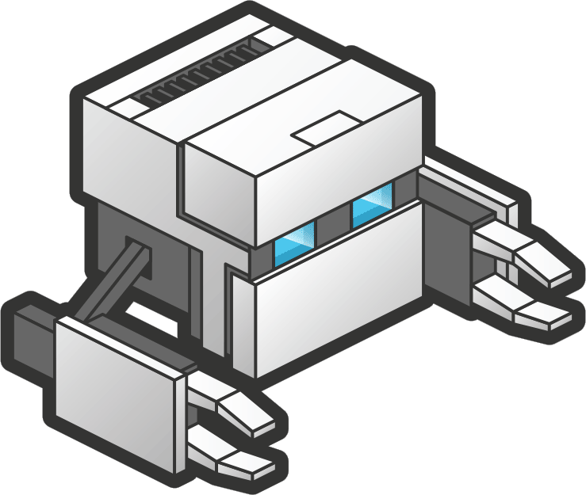

¿Que es PhoneGap?


PhoneGap es un framework de código abierto (open source), creado por la empresa Nitobi que se encargaba de desarrollar aplicaciones para dispositivos móviles, que para abaratar costos y tiempos, desarrolla un framework basado en HTML5, JavaScript y CSS3, que permitía desarrollar una aplicación compatible con todos los sistemas operativos móviles. Es por esto que PhoneGap nace por necesidad, la necesidad de no tener que pensar en desarrollar para cada dispositivo, y que el producto final sea compatible con todas las plataformas.

*Compilado y gestión de firma, el desarrollo de aplicaciones de manera local, es decir sin usar el servicio de Adobe, implica tener múltiples SDKs instalados, y verificar que cada versión de los mismos sean las correctas, ya que PhoneGap es compatible solo con un determinado conjunto de herramientas que son provistas por cada proveedor de cada sistema operativo, que se va actualizando en cada versión; esto implica un trabajo extra cuando desarrollamos, y es uno de los puntos a favor que tiene el servicio de Adobe PhonGap Build, ya que al subir la aplicación para ser compilada, nos aseguramos que siempre se va a compilar con la última versión disponible, tanto de los SDKs como del framework.
*Multiplataforma, al ser multiplataforma reducimos el tiempo de producción. Podemos crear aplicaciones para los distintos sistemas operativos móviles, todo con el mismo código fuente.
*Trabajar en equipo, se puede agregar roles o permisos para trabajar en equipo de desarrollo, compartiendo el proyecto e incluso agregando mas miembros al mismo.